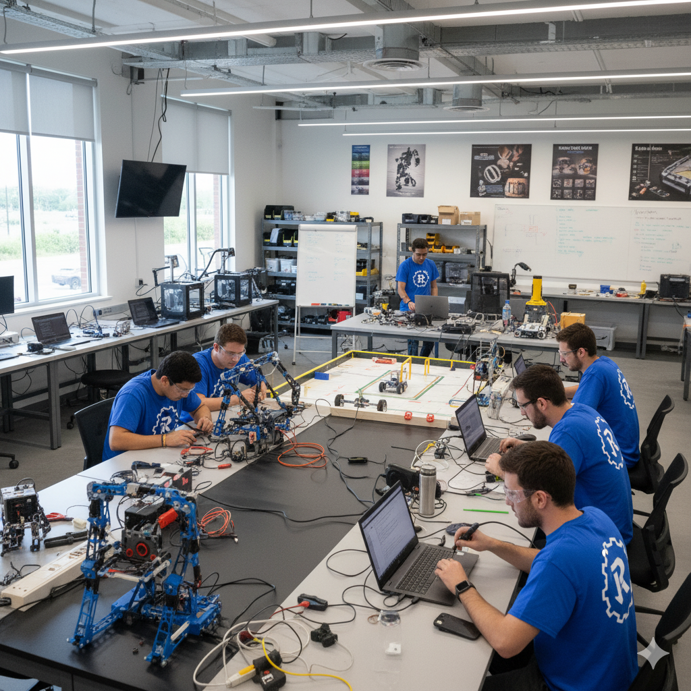

Student Life
Clubs, sports, service and leadership programs create a lively campus culture. Campus has a very good study envirnonment for the students where they can learn and explore different fields. The presence of different facilities make it easier for the students to live and study.
Robotics Club
Arduino, coding, and competitions.
Eco Club
Sustainability projects and awareness drives.

Literary Society
Reading circles, debates, and MUN.

Transport
The days-schollars have the bus facilities for inter city.
GPS-enabled buses with trained staff and helpline.